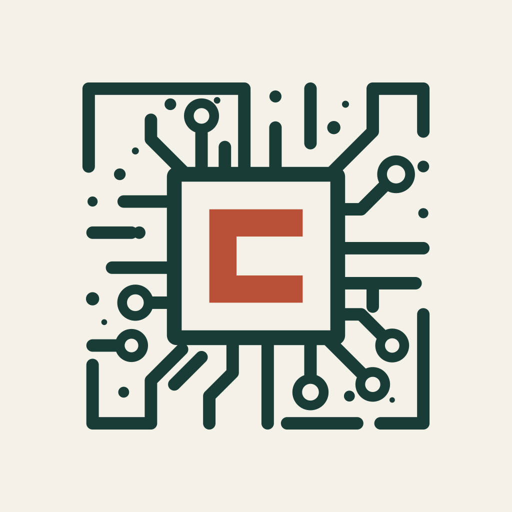

Design kit / 01
A clear, independent
point of view.
Warm paper, precise geometry and a restrained accent. A publication identity that reconnects with the original circuit-board mark, with a colored C at its center.
Color with a purpose.
Fjord & Clay · Primary
#F4F1E8Background
#193C36Logo & headings
#D7DFCCSecondary surface
#B95138Accent
#252B28Body text
Sea & Poppy · Alternate
#F0F2EDBackground
#285259Logo & headings
#D1E0DCSecondary surface
#B74330Accent
#27383ABody text
Use paper for the main canvas, ink for headings and buttons, and the darker text color for prose. Keep the accent to small graphical details. Fjord on Chalk has a 10.68:1 contrast ratio; Clay on Chalk is 4.33:1 and is intended for graphics, not small body text.
Typography.
Logo / Montserrat 600
CHIPSTRAT
Use the outlined masters for exact logo spacing.
Interface & body / Inter
Clear by design.
Use 400–450 for prose, 550–600 for labels and controls.
Editorial / Newsreader 500
Depth, with clarity.
An optional serif for article titles and pull quotes.
Give the mark room.

Keep its proportions.
Allow at least one quarter of the chip’s height as clear space when placing it next to other elements. The supplied avatars already include circular-crop padding.
Horizontal logo: preferably 180px wide or more. Detailed mark: 64px or more. Use the compact circuit mark at 32–64px and the supplied micro icons below 32px. Horizontal logos use the compact drawing.
Use transparent masters on compatible backgrounds. Use the opaque square images for social profiles. Avoid stretching, rotating, shadows or changing the central C independently.
A consistent website.
Use a 1200px maximum page width, a 720px reading column, a 24px mobile gutter and a 4px spacing base. Cards use quiet borders and small corners. Prefer comfortable whitespace to extra decoration.
Upload references.
Platform guidance checked October 6, 2026. Platform previews may crop differently by device; inspect the final preview before saving.
| Placement | Included dimensions | Official reference |
|---|---|---|
| Substack logo / email banner | 1024 × 1024 / 1100 × 220 | Platform help ↗ |
| Substack website wordmark | 1344 × 256 | Platform help ↗ |
| X profile / banner | 400 × 400 / 1500 × 500 | Platform help ↗ |
| LinkedIn company logo / banner | 400 × 400 / 1512 × 256 | Platform help ↗ |
| LinkedIn personal banner | 1584 × 396 | Platform help ↗ |
| YouTube channel banner | 2560 × 1440 | Platform help ↗ |
Substack’s guide lists 1200 × 630 and also mentions 14:10 previews. Both crops are included. For LinkedIn, use the company-logo asset on the company page and the personal-banner asset as your profile’s background.